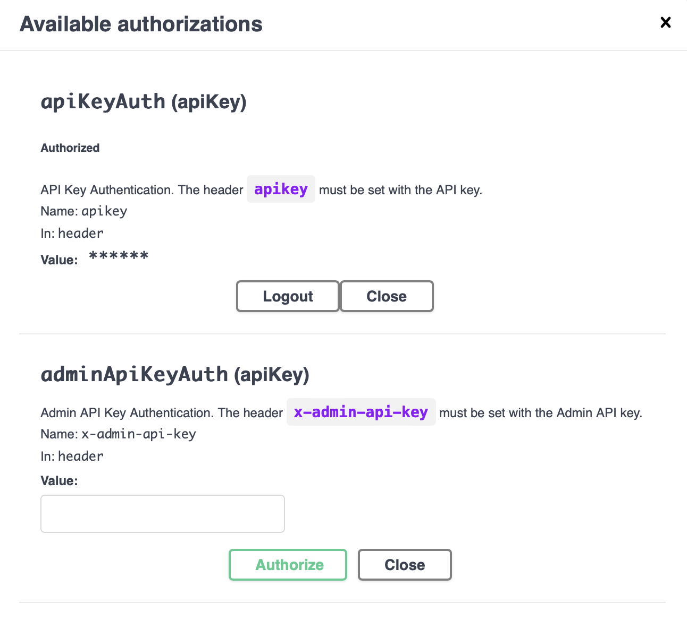

10 Agent REST API
10.1 The Cloud Agent API
The local Cloud Agent exposes two public protocol surfaces through APISIX. Your controller application uses the REST API to create DIDs, register credential schemas, issue Verifiable Credentials, manage connection records, request presentations, and inspect protocol state. Other agents and wallets use the DIDComm endpoint to deliver encrypted agent messages.
Those two surfaces share the same wallet state. A REST request changes or reads records in the Cloud Agent wallet. A DIDComm message may change the same records after the Cloud Agent processes an inbound connection, issuance, or presentation message. The Cloud Agent README describes this pattern as a controller that sends HTTP requests to the agent and processes webhook notifications from it.
The local stack from the previous chapter runs in single-tenant mode. In that mode, the Cloud Agent uses the default entity and the default wallet for REST API and DIDComm operations. The Cloud Agent authentication documentation defines both IDs as 00000000-0000-0000-0000-000000000000.
You can confirm that default wallet initialization in the container logs:
docker logs local-cloud-agent-1 | grep "default"
... Initializing default wallet.
... Default wallet seed is not provided. New seed will be generated.
... Entity created: Entity(00000000-0000-0000-0000-000000000000,default,00000000-0000-0000-0000-000000000000,1970-01-01T00:00:00Z,1970-01-01T00:00:00Z)Later, the example application will use multi-tenant mode. In multi-tenant mode, the Cloud Agent serves multiple tenants from one shared Cloud Agent instance. The multi-tenancy documentation defines an entity as the tenant representation and a wallet as the isolated container for that tenant’s DIDs, connections, credentials, keys, credential schemas, and related assets. A service-managed wallet fits a server-side issuer, verifier, or custodial wallet service where the operator manages the runtime, database, secret storage, API access, and backups.
The _system/health endpoint from the previous chapter reports the running service version. The system API exposes one more endpoint for runtime metrics:
curl http://localhost/cloud-agent/_system/metrics
# HELP jvm_memory_bytes_used
# TYPE jvm_memory_bytes_used gauge
jvm_memory_bytes_used{area="heap",} 1.07522616E8
jvm_memory_bytes_used{area="nonheap",} 1.74044936E8
...The Cloud Agent OpenAPI specification describes the metrics endpoint as Prometheus text output from the internal metrics registry. Use it when you need local runtime data for memory, latency, or health investigations.
10.2 OpenAPI Specification
The OpenAPI Specification (OAS) is a standard description format for HTTP APIs. It gives humans and tools a shared contract for paths, request bodies, response bodies, authentication schemes, and schemas. The Cloud Agent source repository includes an OpenAPI 3.1 document titled Identus Cloud Agent API Reference, and the local Docker stack exposes that document through APISIX.
For the local agent started in the previous chapter, use this URL as the version-matched API contract:
http://localhost/docs/cloud-agent/api/docs.yamlIf you started the agent with a different run.sh --port value, replace localhost with localhost:<port>. Swagger UI reads this same document. Postman and client generators can import it to create a collection or client stub for the exact Cloud Agent version you are running.
The hosted Identus docs provide current tutorials and conceptual material at https://hyperledger-identus.github.io/docs/. For endpoint-level work in this local stack, prefer the OpenAPI document served by your running agent. It avoids mismatches between the book, a hosted page, and the Docker image version.
10.3 APISIX Gateway
APISIX proxies the Cloud Agent services inside the local Docker stack. The run.sh script binds APISIX to the port you selected, with 80 as the default. The Cloud Agent’s shared APISIX configuration defines these routes:
| Local route | Upstream service | Purpose |
|---|---|---|
| http://localhost/cloud-agent/ | cloud-agent:8085 |
REST API for controller applications. |
| http://localhost/docs/cloud-agent/api/docs.yaml | cloud-agent:8085 |
OpenAPI document for the running Cloud Agent. |
| http://localhost/apidocs/ | swagger-ui:8080 |
Swagger UI for interactive API calls. |
| http://localhost/didcomm/ | cloud-agent:8090 |
Public DIDComm endpoint for encrypted agent messages. |
The DIDComm endpoint is the transport endpoint advertised in invitations and DID documents. A peer uses it to send encrypted DIDComm messages to this Cloud Agent. The DIDComm chapter covers the message model and protocol flow later in the book.
APISIX routes match incoming requests, apply route plugins, and forward requests to upstream services. The Cloud Agent local configuration uses proxy-rewrite to strip the public route prefix before forwarding the request, and it enables the APISIX cors plugin on the REST and DIDComm routes.
The local APISIX CORS configuration allows all origins on the /cloud-agent/* and /didcomm* routes. That setting is convenient for local browser testing. A deployed service should restrict allowed origins to the domains that host the controller application, admin tools, or wallet front ends that need browser access.
10.4 Swagger UI
Swagger UI renders API documentation and an interactive request form from an OpenAPI document. The local Docker stack includes a Swagger UI container, and APISIX exposes it at http://localhost/apidocs/.
Open http://localhost/apidocs/ in your browser. In the server list, select:
http://localhost/cloud-agent - The local instance of the Cloud Agent behind the APISIX proxy.
Click Authorize. Swagger UI opens a modal for the apikey header. The local stack has API key authentication disabled by default, so the Cloud Agent will accept the request even if Swagger UI sends any value. Use test for now. In later chapters, after the book enables API key authentication, this field must contain the API key assigned to the default entity or tenant entity.
After authorizing, the modal should look like this:

Close the modal and try the first request. Expand GET /connections and click Try it out. Leave offset, limit, and thid blank. Click Execute to send the request.
The response should look similar to this:
{ "contents": [], "kind": "ConnectionsPage", "self": "", "pageOf": "" }An empty contents array means the default wallet has no connection records yet. That is the expected result for a new local agent.
Swagger UI can generate a curl command for the request it sends. You can paste that command in your terminal to run the same API call outside the browser. For example:
curl -X 'GET' \
'http://localhost/cloud-agent/connections' \
-H 'accept: application/json' \
-H 'apikey: test'
{"contents":[],"kind":"ConnectionsPage","self":"","pageOf":""}10.5 Postman
Swagger UI is useful for quick checks against the running agent. Postman is better when you need saved environments, request variables, scripted assertions, shared collections, or repeated manual testing across issuer, holder, and verifier agents.
Postman can import OpenAPI definitions from a file, a URL, pasted YAML or JSON, or a repository. Use the local Cloud Agent OpenAPI URL so the collection matches your running Docker image.
- Install Postman if you do not already have it.
- Copy the local OpenAPI URL:
http://localhost/docs/cloud-agent/api/docs.yaml. If you changed therun.sh --portvalue, include that port in the URL. - In Postman, go to
File -> Import. - Paste the OpenAPI URL in the import box, or download the YAML from that URL and import the file.
- Import the definition as a collection.
After import, Postman should show a collection named Identus Cloud Agent API Reference. Set any collection base URL or server variable to http://localhost/cloud-agent if Postman does not select that server for you.
10.6 Tutorials
The official Identus tutorials cover the main API flows: connections, DID management, credential schemas, credential issuance, presentation requests, webhooks, multi-tenancy, and VDR interaction. Use those tutorials as the endpoint reference for the next chapters. This book will connect those API operations to the example application, the wallet model, DIDComm flows, and verifier policy checks.